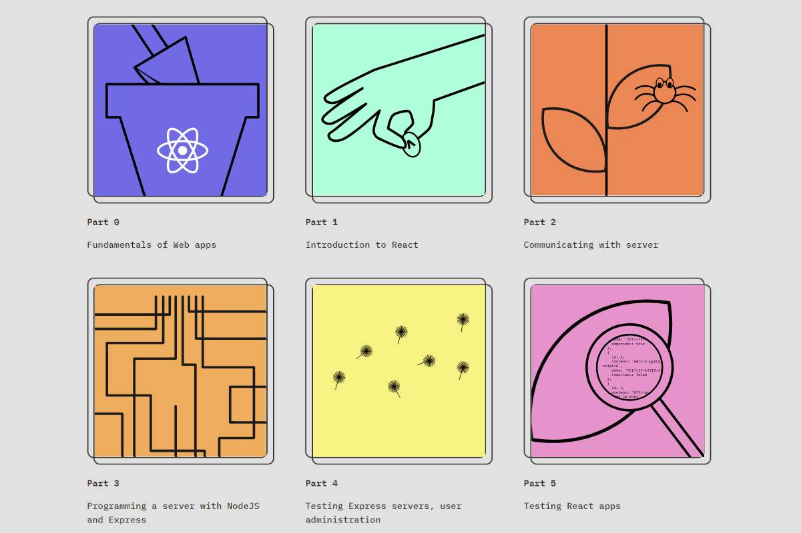

O kurzu Full stack open 2020

Proč jsem začal kurz
Po dokončení třech prvních částí na freecodecamp, kde jsem se naučil responzivní web designu a základy JS, jsem hledal další místo, kde bych se mohl rozvíjet. Podle P1Xt a dlouhém zvažování "do čeho se pustit", jsem pokračoval tímto kurzem. Zaujal mě tech-stack, kterému jsem se chtěl věnovat, a taky forma výuky. Látka je probrána do podrobna a vysvětluje všechnu "magii" co se děje pod povrchem. Zaujala mě ale i šířka do jaké má kurz rozsah. Od frontendu po backend.
Prerekvizity kurzu
Na stránkách kurzu se dočteme:
"Participants are expected to have good programming skills, basic knowledge of web programming and databases, and mastery of basic use of the Git version management system. You are also expected to have perseverance and a capacity for solving problems and seeking information independently"
V počátcích kurzu jsem si musel doplňovat znalosti o JS. Později už šlo všechno hladce. Dobrý základ JS je důležitý, aby člověk rozlišil, co dělá framework, a co je čistý JS.
Co jsem se naučil
Já jsem v kurzu dokončil zatím 6 částí, tedy kapitoly 0 až 6. Viz obrázek výše. Podle tohoto popisu se dá lehce zjistit, jaký cíl si autoři kurzu vzali za svůj:
"Learn React, Redux, Node.js, MongoDB, GraphQL and TypeScript in one go! This course will introduce you to modern JavaScript-based web development. The main focus is on building single page applications with ReactJS that use REST APIs built with Node.js.. ... Other topics include debugging applications, configuration, managing runtime environments and NoSQL databases."
Kurz se z počátku soustředí na programování s reactem, později přidává programování na backendu v node.js a pak se to všechno spojuje do jedné aplikace. Kromě programování je kladen důraz na práci s GITem. Přes github se odevzdávají jednotlivá cvičení. Repo se pak postne do odevzdávacího systému, a odpovědi už se potom nedají měnit.
Kapitola 0 – Fundamentals of Web apps
Úvodní kapitola vysvětluje způsob práce v kurzu, odevzdávání cvičení a jiné informace. První cvičení spočívá ve vytvoření schématu, které vysvětluje, jak komunikuje klient se serverem. Probírány jsou síťové protokoly, DOM, a taky práce s konzolí. Kapitola je dobrým úvodem do vývoje webových aplikací.
Kapitola 1 – Introduction to React
Začalo přitvrzovat. Kapitola 1 se začala věnovat komplexnějším problémům. Začíná se seznamováním s reactem (JSX, props, teorie komponent) pak pokračuje "připomínací" podkapitolou o JS. V této podkapitole se velmi často odkazuje na jiné zdroje, které jsou vžd velmi pečlivě vybrané. Po úvodu do reactu a zopakování JS, je probírán "component state", předávání props do komponent event handlig aj. Cvičení je rozděleno na tři maličké aplikace, které si ale musí člověk napsat "from scratch". Kapitola je výborným úvodem do reactu, učí do hloubky a všechno je vysvětleno. Ve cvičeních je kladen důraz na pochopení toho, jak funguje React.
Kapitola 2 – Communicating with server
Kapitola hezky navazuje na předchozí. Pokračuje se v Reactu. Rendrování seznamů, a jiných dat. Poté je probíráno odesílání dat na server a získávání dat ze serveru. Pro komunikaci se serverem je představen axios. S ním souvisí první setkání s "promises". Další dobrá utilitka je json-server. Ten poslouží jako fake REST API v začátcích. Pro pochopeí principů je to velmi vhodné, protože JSON server nevyžaduje složité nastavení.
Kapitola 3 – Programming a server with NodeJS and Express
V této části jsem se setkal poprvé s programováním na backendu. Pomocí node.js a knihovny Express. Cvičení se zaměřila na zpracování síťových požadavků na serveru. Další část kapitoly se zabývala zpracováním dat v MongoDB, což je NoSQL dokumentová databáze. Také jsem poprvé provedl deploy aplikace na službu Heroku. V rámci kapitoly jen backendovou část.
Kapitola 4 – Testing Express servers, user administration
Tato kapitola mi trvala nejdéle ze všech (zatím). Byl jsem vytížený v osobním životě a časté odkládání a vracení se k obsahu látky nebylo dobrou strategií. Někdy jsem se musel vracet k jednotlivým tématům i vícekrát. Možná byl problém i v tom, že to, co uděláte v této kapitole není navenek vůbec vidět. Testování aplikace mě ale velmi bavilo, psaní testů bylo hodně o javascriptu a algroritmech. To považuju za jeden z přínosů této kapitoly. Pro testování je použita knihovna Jest, vyvýjená Facebookem. Implementoval jsem unit a integration testy pro backend. Po napsání testů byl vývoj v backendu rychlejší a nemuselo se tolik testovat přes REST Client (což mimo jiné doporučuju pro VSCode, jako dobré rozšíření pro základní testování)
Po testování jsem se naučil jak implementovat uživatelské ověřování na backendu pomocí token authentication (vysvětlení na scoth.io). Pro mě velká novinka, ale velmi důležitá. Použil jsem knihovnu jsonwebtoken. Pro šifrování hesel jsem využil bcrypt. Získal jsem zde i nějaké základní poznatky o kryptografii. Kapitola byla celkově velmi obsáhlá, zdlouhavá, ale zato velmi zajímavá a neskutečně přínosná.
Kapitola 5 – Testing React apps
Návrat k frontendu (konečně). TO co se udělalo na bacnekdu se v kapitole implementuje na frontend. Po delší době opět práce v reactu. Bylo nutné se naučit asynchronní požadavky. K tomu jsem používal z počátu .then příkazy, následně se však v kurzu představila syntaxe s async/await která se mi líbí víc, tak jsem ji začal používat. Implementoval jsem login a následně i registraci na FE. Z cvičného projektu jsem udělal publikovaný projekt. Práce navíc se však myslím vyplatila. Dokonce jsem musel přeskočit na kapitolu 7, kde se probíralo stylování aplikace.
Druhá část páté kapitoly se zabývá testování FE s pomocí Jestu a react-testing-library. Implementoval jsem unit testy na FE. Pro E2E testy byla použita moderní knihovna Cypressu. Selektory v Cypressu jsou založeny ja Jquery, tak jsem se dokázal rychle chytit. Jinak je Cypress dobrý nástroj, a po pár napsaných testech se celkové prostředí Cypressu zdá velmi uživatelský příjemné.
Celkový dojem z dosud dodělaných kapitol
Když porovnám svoje znalosti v době, kdy jsem kurz začal a svoje znalosti teď, je zde propastný rozdíl. Kurz je velmi dobrý v tom, jak učí věci do hloubky, ale zároveň do šířky. Všechno je vysvětleno velmi přesně a pochopitelně. Cvičení mohou být někdy depresivní v tom, že pokud se zaseknete, nemá vám kdo poradit. Nenašel jsem žádné medium, kde by se daly zjistit odpovědi (např. discord, reddit aj.) Možným řešením je prohledávat github, ale čtením cizího kódu se nemusíte dopátrat k řešení problému. Kurz obsahuje dobrovolná cvičení, které jsem, až na jedno, zvládl. Na tom jednom jsem se zasekl na opravdu dlouho, a protože jsem se těšil na kapitolu 5, nedodělal jsem ho. Na konci jste ohodnocení podle počtu odevzdaných cvičení, do kterých se započítavají i dobrovolná cvičení. Motivace k dělání dobrovoných cvieční však spočívá hlavně v lepším porozumění látce.
EDIT: Dodělání dalších kapitol
Part 6 – State management with Redux
V této kapitole se poprvé setkáváme s Reduxem (https://redux.js.org/). Prozatím se stav v aplikaci udržoval pouze v React komponentách. Nyní se state posune mimo komponenty do „centrálního uložiště“ mimo komponenty. S tímto nám pomůže Redux a nainstalujeme si i react-redux abychom mohli využít hooks-api z této knihovny. Dva hooky (https://react-redux.js.org/api/hooks), které se naučíme používat jsou useSelector a useDispatch. useSelector je pro získání stavu ze store. useDispatch je pro odeslání akce z komponenty do storu. Důležité je také „obalit“ naši aplikaci do Provider komponenty. Ve cvičeních z první části kapitoly si zopakujeme aplikace z kapitoly 1, jen do nich implementujeme Redux. V další části kapitoly se naučíme pracovat s Redux DevTools, což je hezká a užitečná věc pro zkoumání stavu aplikace. Dále se kapitola zabývá propojením reduxu s backendem. S tím také souvisí problém s asynchronními akcemi v Reduxu. Tento problém řešíme pomocí knihovny redux-thunk (https://github.com/gaearon/redux-thunk). Díky této knihovně můžeme tvořit asynchronní „action creators“ , které nejprve čekají na dokončení nějaké operace a pak až pošlou (dispatchnou) skutečnou akci. Trik je v tom, že díky redux-thunk lze mít v akci které vrací asynchronní funkci s dispatch metodou jako parametr.
Connect
V poslední části kapitoly se seznámíme s s využitím starší a možná složitější metodou, jak propojit redux a react. A to pomocí connect(). Hooks-api tedy na chvilku odstraníme a použijeme tuto starší metodu. Nutné bude použití funkci „mapStateToProps“ a „mapDispatchToProps“. V posledních cvičeních dokončíme „anecdotes“ s využitím Reduxu, ale s pomocí connect. Tato cvičení byla někdy náročná a hodně jsem musel používat devtools, abych správně odladil chyby. V Reduxu je hodně nového názvosloví, u kterého není třeba ani úplně patrné na první dobrou, co by to mělo dělat. Po nějaké práci s tímto nástrojem si však všechno osvojíme a jde to lépe. Přínosem Reduxu je sledování state centrálně, do každé komponenty si můžete „vytáhnout“ jakoukoliv část státu, a nemusíte state „posílat“ dolů např. přes props. V menších projektech bych si ale vystačil pouze se stavem uvnitř komponent, případně uvnitř jedné hlavní app komponenty.
Part 7 – React router, custom hooks, styling app with CSS and webpack
V sedmé kapitole začneme React-routerem, který nám pomůže s navigací v aplikaci a renderování různých stránek aplikace. Poté se podíváme na různé možnosti stylování aplikace. A jako poslední prozkoumáme webpack, který je použit v create-react-app. Zatím to pro nás totiž byla taková „magie“, a tak se podíváme, co přesně se děje uvnitř.
React-router
Nainstalujeme si react-router-dom. S tímto nástrojem můžeme simulovat standardní HTTP GET requesty pro načítání našich dalších stránek. S pomocí react routeru však nemusíme žádné HTTP GET requesty dělat, protože jsme v single page aplikaci, a bude tak stačit vytvořit jiný pohled pomocí Javascriptu resp. Reactu. Použití react routeru je poměrné jednoduché a stačí nám importovat několik věcí (rowserRouter, Switch, Route, Link, useParams, useHistory, redirect). Tyto pomocníky následně použijeme v navigační logice.
Custom hooks
V této podkapitole si vytvoříme vlastní hook, který využijeme na ovládání pole formuláře. Tím si zjednodušíme a zpřehledníme kód. Navíc hoko můžeme použít v dalších částech aplikace. Získané znalosti využijeme ve cvičeních, kde pokračujeme v naší „anecdotes“ aplikaci. Následně znova vytvoříme mini-aplikaci „countries“ z kapitoly 1. Úkolem je implementovat vlastní hooks – jeden na frontedovou část, druhý nám pomůže s načítáním dat do backendu a do storu zároveň.
Styly v reactu
V této kapitole jsme se mohli seznámit s různými přístupy ke stylování aplikace v reactu. Já jsem si zvolil react-bootstrap , protože byl zrovna nejpopulárnější. Přišel mi také jednodušší, a taky už jsem s bootstrapem pracoval. Poté se v kurzu dozvíme něco o Material UI který se mi designově líbí víc než Bootstrap. Ale nepoužil jsem ho. Mimo přehled dalších frameworků, se kterými se více neseznamujeme, existuje ještě možnost použití styled components a psaní vlastních stylů pomocí CSS. Rozhodně dobrá volba pro ty, co chtějí unikátní design. Ale je to zase trochu více pracná možnost.
Webpack a cvičení
Předposlední podkapitola je o webpacku, abychom trochu pochopili, co ten create-react-app vlastně dělá. Zajímavé čtení. Na závěr je ještě probrána problematika Class Components. V kurzu jsme totiž pracovali výhradně s komponentama definovanými jako javascriptové funkce. Kapitola 7 končí snad nejdelší sérií cvičení. V těchto cvičeních refactorujeme fullstack aplikaci na vkládání blogů tak, aby co nejvíce využívala Redux state management. Také aplikaci rozšíříme o nové pohledy na uživatele a na blogy. Také se v rámci cvičení požaduje nastylovat aplikaci pomocí některé z výše uvedených možností. Já jsem použil react-bootstrap a vlastní CSS. V kapitole 7 se mi nejvíce líbilo využití UI frameworků a seznámení s react DOM, díky kterému může single page app fungovat podobně (alespoň z pohledu uživatele) jako normální statická webová stránka. Redux jsem si moc neoblíbil, ale chápu jeho velkou užitečnost. Na mých menších projektech ho asi zatím používat nebudu. Odkaz na zdrojové soubory kapitoly 7 na github zde.A závěrečný projekt lze spustit zde. Přihlásit se lze pod uživatelem Test, heslo test.
Po dokončení dalších kapitol se aktualizuje i certifikát, kde je vidět 7 ECTS kreditů a známka 5. Finská 5 = česká 1 :) Odevzdáním dalších cvičení lze získat ještě nějaké další kredity. Další kapitoly se zabývají GraphQL, Typescript, React Native a úplně nově CI/CD (Continuous Integration / Continuous Delivery systems)
Tady se můžete podívat na můj certifikát z kurzu